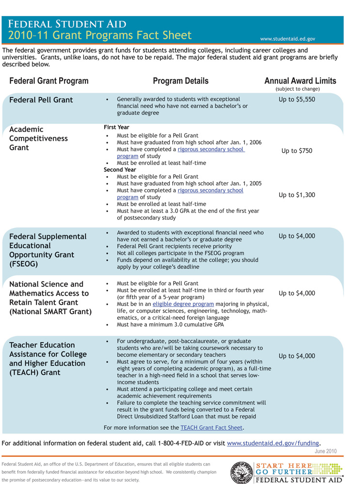

You may already be receiving financial aid or understand what types of financial aid are available. Even if you are not receiving financial aid, however, you should understand the basics because your financial situation may change and you may need help paying for college. You owe it to yourself to learn about potential types of aid you might receive.
Every college has a financial aid office that can give you information about standard financial aid programs. Certain kinds of financial aid, however, such as private scholarshipsA sum of money or other financial aid granted to a student based on academic merit or other ability, intended to help meet the expenses of attending college., are not administered by the college, so you may need to do some research. There are three main categories of financial aid:
These three types of aid are described in the following sections. Remember that this section only introduces these types of financial aid—be sure to get more information from your college’s financial aid office and the online sources listed here.
For financial aid administered by your college, often only one general application form is required, along with detailed information on your financial situation (and those of your parents or guardians, if you are receiving their support) provided by filling out the FAFSA (Free Application for Federal Student Aid)A detailed financial application form including a college student’s (and often his or her parents’ or guardians’) detailed financial information such as income; required by almost all U.S. colleges as part of applying for financial aid.. If you have not already done this application, learn more at http://www.fafsa.ed.gov. Virtually all colleges require the FAFSA.
Outside loans and scholarships are generally applied for separately. Follow these general rules to ensure you receive any aid for which you are qualified:
Scholarships and grants are “free” money—you do not have to pay them back, unlike student loans. A scholarship is generally based on merit rather than demonstrated financial need—based on past grades, test scores, achievements, or experiences, including personal qualifications such as athletic ability, skills in the arts, community or volunteer experiences, and so on. Don’t make the mistake of thinking scholarships go only to students with high grades. Many scholarships, for example, honor those with past leadership or community experience or the promise of future activities. Even the grades and test scores needed for academic scholarships are relative: a grade point average (GPA) that does not qualify for a scholarship at one college may earn a scholarship at another. Never assume that you’re not qualified for any kind of scholarship or grant.
A grant also does not need to be paid back. Most grants are based on demonstrated financial need. A grant may be offered by the college, a federal or state program, or a private organization or civic group. The largest grant program for college students is the federal government’s Pell Grants program (Figure 11.5 "Student Grant Programs from the Federal Government"). Learn more about Pell Grants and other scholarship and grant programs from your college’s financial aid office or the online resources listed later.
Figure 11.5 Student Grant Programs from the Federal GovernmentFederal Student Aid, “Federal Student Aid Grant Programs Fact Sheet,” http://studentaid.ed.gov/students/attachments/siteresources/Grant_Programs_Fact_Sheet_04_2009.pdf (accessed July 13, 2010).
Many different student loan programs are available for college students. Because many colleges do not have sufficient funds to offer full grants to students with financial need, financial aid packages often include a combination of grant and loan money. Ideally, one would like to graduate without having loan balances to repay later on. However, almost two-thirds of full-time college students do need student loans to pay for college. The amount of money students borrow has risen in recent years because tuition and fees have risen faster than inflation. The total amount owed now averages over $20,000 for students at four-year colleges and over $10,000 at two-year colleges.
Unfortunately this is a necessary reality for many students. For most, graduating from college owing some money is preferable to not going to college at all. With smart choices about the type of loan and a structured repayment program for your working years after graduation, there’s no reason to fear a loan. Just remember that the money eventually has to be repaid—it’s not “free” money even though it may feel that way while you’re in school.
All student loans are not the same. Interest terms vary widely, and with most private loans the interest starts building up immediately. The best loan generally is a subsidized federal Stafford loanA type of federal college student loan that does not begin accruing interest until after graduation.. “Subsidized” in this case means the interest does not begin on the loan until after graduation. If you borrowed $20,000 over four years and interest accrued during this time, you could owe as much as $25,000 upon graduation. Be sure to talk with your college financial office first about getting a federal subsidized Stafford loan. Since the current maximum of this type of loan for most students is over $30,000, you ideally should not have to consider other types of loans—if you qualify for the Stafford with demonstrated financial need.
Many financial analysts urge college students not to borrow more than about $5,000 per year, or about $10,000 for two years of college, or $20,000 for four years. Even if you qualify for more, that doesn’t mean you should take it, and in fact, you may want to borrow much less. Think about this seriously before jumping to any conclusions about your future earning potential and how much you may have to struggle then to pay off your student loans. During an economic downturn, for example, many students have difficulty finding a job that pays well enough to cover their loan payments without hardship.
First learn the repayment rate for a loan amount. Then research the starting salary you can realistically expect after graduation. You can find this information online at many sites (such as the USNews salary finder wizard at http://usnews.salary.com/salarywizard/layoutscripts/swzl_newsearch.asp). Assume the starting salary will be at the low end of the salary range for any given career. Finally, make sure that your loan payments do not total more than 10 percent of your starting salary. If the payment amount is more than 10 percent, you are setting yourself up for future financial problems. Try to find ways to cut back on expenses instead. Many experts advise attending a less expensive college, if necessary, rather than risking your future well-being.
Work study programs are the third type of financial aid. They are administered by colleges and are a common part of the financial aid package for students with financial need. You work for what you earn, but work study programs often have advantages over outside jobs. The college runs the program, and you don’t have to spend valuable time looking for a job. Work study students usually work on or near campus, and work hours are controlled to avoid interfering with classes and study time. Work study students are more engaged with the academic community than students working off campus.
Some students who enter college already working or who have special skills or job experience can make a higher hourly rate than a work study program pays. If so, you might make the same income working fewer hours, leaving more for studying and other college activities. If this is your situation, carefully weigh the pros and cons before deciding about a work study program.
Start with your local college offices to gather information about financial aid. Do additional research to make sure you’re considering all available options. Even though this takes some effort, it will prove worthwhile if you find other sources of funds for your college years. Start with the online resources listed here.
Federal government information about federal grants and student loans. See http://studentaid.ed.gov.
Federal government scholarship-finding wizard. Click on “Financial Aid and Scholarship Wizard” at https://studentaid2.ed.gov/getmoney/scholarship.
FinAid.org. See this private information Web site on scholarships, grants, and student loans at http://www.finaid.org.
CollegeScholarships.org. See this private information Web site on scholarships, grants, and student loans at http://www.collegescholarships.org.
USNews Salary Wizard. To estimate future earning potential, use this tool available at http://usnews.salary.com/salarywizard/layoutscripts/swzl_newsearch.asp.
What is the best kind of college financial aid to seek?
___________________________________________________
For each of the following statements, circle T for true or F for false:
| T | F | You don’t need to complete the FAFSA if you are applying only for a federal student loan. |
| T | F | If you apply to your college’s financial aid office, they will tell you about all possible scholarships for which you may be qualified. |
| T | F | After graduation, you have to begin repaying the money you received in a grant. |
| T | F | A work study program job often has advantages over a job you find on your own. |